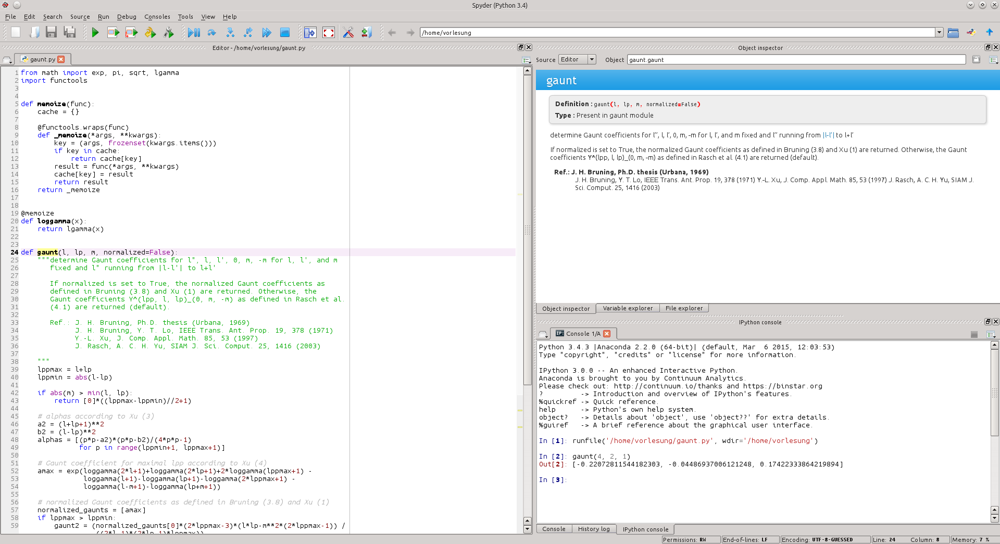

Einführung¶
Warum Programmieren lernen?¶
Computer sind heutzutage allgegenwärtig, sei es im Auto oder in Form eines Smartphones, um nur zwei Beispiele zu nennen. Um Autofahren zu können, muss man dennoch keine Programmiersprache beherrschen. Man muss auch nicht unbedingt Apps für sein Smartphone programmieren, auch wenn dies eine wesentlich produktivere Tätigkeit sein kann als die Benutzung einer App, wie der amerikanische Präsident kürzlich in einer Ansprache betonte:
Don’t just buy a new videogame; make one. Don’t just download the latest app; help design it. Don’t just play on your phone; program it. (B. H. Obama II, 8.12.2013 [1])
Vielleicht ist es aber auch schon interessant, eine gewisse Vorstellung davon zu bekommen, was in der Steuerelektronik eines Autos oder in einem Smartphone vor sich geht.
Als Studentin oder Student der Naturwissenschaften wird man kaum das Studium absolvieren können, ohne einen Computer zu benutzen. Schließlich muss eine Abschlussarbeit erstellt werden, die vielleicht auch die eine oder andere Abbildung enthalten sollte. Natürlich wird man für diesen Zweck kaum ein eigenes Textverarbeitungsprogramm erstellen, aber bereits bei der Erstellung von Abbildungen nach den eigenen Vorstellungen können Programmierkenntnisse nützlich werden.
Bevor eine Abschlussarbeit geschrieben werden kann, sind Daten zu sammeln und zu analysieren. Dabei muss vielleicht die Kommunikation zwischen Messgerät und Computer programmiert werden. Oder man kann sich bei der Auswertung der Daten mit Hilfe eines selbst geschriebenen Programms viel Zeit und Mühe sparen. Bei einer theoretisch ausgerichteten Arbeit wird man vielleicht feststellen, dass das, was sich mit Papier und Bleistift rechnen lässt, schon lange von anderen gemacht wurde. Viele interessante Probleme erfordern daher den Einsatz des Computers, und dabei wird man ohne Programmierkenntnisse nicht weit kommen. Nicht ohne Grund stellt man heute neben die Experimentalphysik und die Theoretische Physik häufig die Numerische Physik oder Computational Physics. Genauso wie Physiker und Materialwissenschaftler mit Papier und Bleistift umgehen können müssen, müssen sie auch in der Lage sein, ein Programm zu schreiben, um die alltäglichen Aufgaben bei der Forschungsarbeit lösen zu können. Ebenso selbstverständlich wird diese Fähigkeit auch für viele Tätigkeiten in der Industrie vorausgesetzt.
Programmieren zu können ist aber nicht nur eine Notwendigkeit für Naturwissenschaftler, Programmieren kann auch Spaß machen. So wie das Knobeln an einer wissenschaftlichen Aufgabe (hoffentlich) Spaß macht, gilt dies auch für die Suche nach einer eleganten und effizienten Lösung eines Problems auf dem Computer [3]. Zugegeben: Es kann durchaus nerven, wenn der Computer ständig Fehler anmahnt und dabei äußerst starrsinnig ist. Allerdings hat er praktisch immer recht. Da hilft es nur, die Fehlermeldungen ernst zu nehmen und ein bisschen Gelassenheit an den Tag zu legen. Dafür beschwert sich der Computer auch nicht, wenn er uns lästige Arbeit abnimmt, indem er zum Beispiel zuverlässig immer wieder die gleichen Programmanweisungen abarbeitet.
Warum Python?¶
Das Ziel dieser Vorlesung ist es in erster Linie, eine Einführung in das Programmieren für Studierende ohne oder mit nur wenig Programmiererfahrung anzubieten. Aus der Vielzahl von existierenden Programmiersprachen wird hierfür die Programmiersprache Python verwendet, wobei allerdings vermieden wird, spezifische Eigenschaften der Programmiersprache zu sehr in den Vordergrund zu rücken. Gründe für die Wahl von Python sind unter anderem [2]:
- Es handelt sich um eine relativ leicht zu erlernende Programmiersprache, die aber dennoch sehr mächtig ist.
- Python ist für die gängigen Betriebssysteme, insbesondere Linux, MacOSX und Windows, frei erhältlich.
- Es unterstützt das Schreiben gut lesbarer Programme.
- Als interpretierte Sprache erlaubt Python das schnelle Testen von Codesegmenten im Interpreter und unterstützt somit das Lernen durch Ausprobieren.
- Python besitzt eine umfangreiche Standardbibliothek (»Python comes with batteries included«), und es existieren umfangreiche freie Programmbibliotheken, u.a. auch für wissenschaftliche Anwendungen wie NumPy/SciPy, das wir im Kapitel Numerische Programmbibliotheken am Beispiel von NumPy/SciPy besprechen werden.
Python wird gelegentlich vorgeworfen, dass es im Vergleich mit einigen anderen Programmiersprachen relativ langsam ist. Inzwischen gibt es allerdings eine Reihe von effizienten Techniken, um diesem Problem zu begegnen. Im Rahmen dieser Einführung spielen jedoch Geschwindigkeitsaspekte ohnehin kaum eine Rolle.
Die folgenden Zitate zeigen, dass Python nicht nur zur Einführung in das Programmieren taugt, sondern auch in großen Projekten Anwendung findet [4]:
Tarek Ziadé, Mozilla Service Team
«The Python programming language supports many programming paradigms and can be put to productive use virtually anywhere. What’s more, Python is not restricted to the web. For example, we also use Python for our packaging and build systems.
The Python ecosystem is very rich and well-developed. Our developers can incorporate existing libraries into their projects and only need to develop the new functions that they need.
Python’s concise syntax is simple and yet highly productive. This means that new developers can very quickly get involved in our projects, even if they are not yet familiar with Python.»
Peter Norvig, Google
«Python has been an important part of Google since the beginning, and remains so as the system grows and evolves. Today dozens of Google engineers use Python, and we’re looking for more people with skills in this language.»
Cuong Do, YouTube.com
«Python is fast enough for our site and allows us to produce maintainable features in record times, with a minimum of developers.»
Benedikt Hegner, CERN
«Most developers in the CMS experiment are physics students looking for new physics in the data. Usually they don’t have any formal IT training. Python allows them to be productive from the very start and to dedicate most of their time on the research they want to carry out.»
Tommy Burnette, Lucasfilm
«Python plays a key role in our production pipeline. Without it a project the size of The Avengers would have been very difficult to pull off. From crowd rendering to batch processing to compositing, Python binds all things together.»
Einige Zutaten¶
Um auf einem Computer programmieren zu können, ist es im Allgemeinen zunächst erforderlich, die hierfür nötige Software zu installieren, sofern sie nicht ohnehin schon vorhanden ist. Zum einen muss man die Möglichkeit haben, dem Computer die eigenen Absichten mitzuteilen, also ein Programm einzugeben, und zum anderen muss der Computer wissen, wie er die Hardware des Computers dazu bringt, die Vorgaben des Programms umzusetzen.
Beginnen wir mit dem zweiten Punkt und nehmen wir an, dass wir den Programmcode, der in unserem Fall in der Programmiersprache Python geschrieben ist, bereits eingegeben haben. Damit der Computer hiermit etwas anfangen kann, bedarf es bei Python eines sogenannten Interpreters, der den Programmcode interpretiert und auf der Computerhardware ausführen lässt.
Grundsätzlich kann man die aktuellste Version des Python-Interpreters von der offiziellen Python-Webseite www.python.org herunterladen. Dabei ist zu beachten, dass gegenwärtig zwei Versionen von Python im Gebrauch sind, die sich in einigen Aspekten voneinander unterscheiden: Python 2 und Python 3. Beim Schreiben dieses Manuskripts waren die Versionen 2.7.11 und 3.5.1 aktuell. Im Rahmen der Vorlesung wird Python 3 besprochen, so dass auf die Installation von Python 2.7 verzichtet werden kann. Es stellt jedoch kein Problem dar, wenn Python 2 ebenfalls installiert ist, wie dies zum Beispiel bei gängigen Linuxsystemen der Fall sein wird. Für den Gebrauch im Rahmen dieser Vorlesung wird eine Python-Version ab 3.3 empfohlen.
Neben dem eigentlichen Python-Interpreter werden wir jedoch noch weitere Software benötigen, wie zum Beispiel die numerischen Programmbibliotheken NumPy und SciPy [5], die wir im Kapitel Numerische Programmbibliotheken am Beispiel von NumPy/SciPy besprechen werden. Es ist daher am einfachsten, eine Python-Distribution, also eine Art Komplettpaket, zu installieren. Verzichtet man auf die Installation einer geeigneten Distribution, so müssen diese Programmbibliotheken zusätzlich installiert werden.
Es gibt eine Reihe von Python-Distributionen, die auf den Einsatz in der wissenschaftlichen Datenverarbeitung ausgerichtet sind. Hier sind vor allem Canopy von Enthought und Anaconda von Continuum Analytics zu nennen. Für die Installation von Python 3 ist gegenwärtig die Anaconda-Distribution zu empfehlen, die für die gängigen Betriebssysteme frei verfügbar ist. Unter Linux kann man auf die Installation einer speziellen Python-Distribution häufig verzichten, da sich die benötigte Software sehr einfach über die Paketverwaltung installieren lässt.
Kommen wir nun zum zweiten Punkt: Wie sage ich es meinem Computer? Offenbar muss man das Python-Programm in irgendeiner Form dem Computer mitteilen. Hierfür gibt es eine Reihe von Möglichkeiten, die je nach Anwendungszweck geeignet sind und im Folgenden kurz beschrieben werden sollen.
Manchmal hat man es nur mit kurzen Codestücken zu tun. Dies ist vor allem der Fall, wenn man schnell etwas ausprobieren möchte. Dann eignet sich die Python-Shell, in der man zeilenweise Python-Code eingeben kann, der anschließend ausgeführt wird. Sobald Python installiert ist, ist auch die zugehörige Python-Shell verfügbar. Allerdings ist die Python-Shell nicht sehr komfortabel. Da Tippfehler in den vorigen Zeilen nicht leicht korrigiert werden können, kann das Arbeiten mit der Python-Shell schnell lästig werden. Die folgende Abbildung zeigt die Python-Shell in einem Konsolenfenster unter Linux.

Eine erheblich komfortablere Variante der Python-Shell ist die IPython-Shell [6], die beispielsweise bei der Anaconda-Distribution automatisch installiert wird. Hier kann man alte Eingaben zurückholen, Befehle ergänzen lassen und vieles mehr. Es ist daher sinnvoll, statt der Python-Shell grundsätzlich die IPython-Shell zu verwenden.
Interessant ist die Verwendung von so genannten IPython-Notebooks, die es erlauben, interaktiv mit Python in einem Browser zu arbeiten. Zur Vorlesung werden IPython-Notebooks zur Verfügung gestellt [7], die den zu besprechenden Programmcode enthalten. Damit kann der Programmcode während der Vorlesung auf dem eigenen Rechner ohne lästiges Abtippen ausprobiert werden. Zudem ist es leicht möglich, den Programmcode zu ändern, um auftretende Fragen zu klären. Schließlich kann man auch eigene Anmerkungen im Notebook eintragen und auf diese Weise eine eigene Vorlesungsmitschrift erstellen. Ein Beispiel für ein Python-Notebook zeigt die folgende Abbildung.

Da Notebookzellen mehrzeiligen Code enthalten können, sind IPython-Notebooks prinzipiell auch dafür geeignet, etwas umfangreicheren Code damit zu entwickeln. Für größere Programmierprojekte bieten sich allerdings bessere Werkzeuge an. Eine Möglichkeit ist die Verwendung von Editoren wie EMACS [8] oder Vim [9], die zur Erstellung jeglicher Art von Textdateien und damit auch zum Erstellen von Pythonprogrammen verwendbar sind. Diese Editoren sind sehr mächtig und erfordern daher etwas Einarbeitung, die sich aber auf längere Sicht durchaus lohnen kann. Wer die Mühe der Einarbeitung scheut, kann für die Programmentwicklung auch zu einer der verschiedenen verfügbaren graphischen Entwicklungsumgebungen greifen.
Python stellt eine relativ einfache Entwicklungsumgebung namens IDLE zur Verfügung. Daneben gibt es eine Reihe von freien wie auch von kostenpflichtigen Entwicklungsumgebungen. In der Anaconda-Distribution wird die graphische Entwicklungsumgebung Spyder [10] mitgeliefert, die im nächsten Bild gezeigt ist. Unter Linux kann Spyder auch über die jeweilige Paketverwaltung installiert werden.
Das Spyder-Fenster besteht aus verschiedenen Teilfenstern. Rechts unten erkennen wir ein IPython-Fenster, in dem, wie zu Beginn beschrieben, kürzere Codesegmente getestet werden können. Dies ist besonders hilfreich, wenn man beim Programmieren nicht sicher ist, ob ein bestimmter Programmcode wirklich das Beabsichtigte leistet. Das große Fenster links dient dazu, umfangreichere Programmtexte zu schreiben. Die Ausgabe solcher Programme erfolgt dann wiederum im IPython-Fenster. Ein weiteres Fenster dient zur Anzeige von Dokumentation oder zur Fehlersuche. Je nach Bedarf lässt sich das Spyder-Fenster anpassen, aber zumindest zu Beginn sollte die Standardeinstellung angemessen sein. Wir können an dieser Stelle keine ausführliche Einführung in Spyder geben und verweisen stattdessen auf die zugehörige Dokumentation, die bei http://pythonhosted.org/spyder/ zu finden ist.
{kind=link}
Verwendete Symbole¶
>>> stellt den Prompt des Python-Interpreters dar. Darauf folgt der
einzugebende Text. Die Folgezeilen enthalten gegebenenfalls die Ausgabe des
Interpreters.
... wird im Python-Interpreter als Prompt verwendet, wenn die Eingabe
fortzusetzen ist, zum Beispiel im Rahmen einer Schleife. Diese Art der Eingabe
kann sich über mehrere Zeilen hinziehen. Zum Beenden wird die
EINGABE-Taste ohne vorhergehende Eingabe von Text verwendet.
$ steht für den Prompt in der Kommandozeile eines Terminalfensters.
Dieses Symbol weist auf eine wichtige Anmerkung hin.
{kind=link}
 Hier folgt eine Frage, die zum Testen des Verständnisses oder als Vertiefung
bearbeitet werden kann.
Hier folgt eine Frage, die zum Testen des Verständnisses oder als Vertiefung
bearbeitet werden kann.
 Dieses Symbol kennzeichnet weiterführende Anmerkungen, die sich unter
anderem auf speziellere Aspekte der Programmiersprache Python beziehen.
Dieses Symbol kennzeichnet weiterführende Anmerkungen, die sich unter
anderem auf speziellere Aspekte der Programmiersprache Python beziehen.
Literatur¶
Gert-Ludwig Ingold, Vorlesungsmanuskript »Einführung in das Programmieren für Physiker und Materialwissenschaftler«
Das Vorlesungsmanuskript, das Sie gerade lesen, ist online unter gertingold.github.io/eidprog verfügbar.
-
Dies ist die offizielle Python-Webseite. Dort gibt es z.B. die Software zum Herunterladen, eine umfangreiche Dokumentation der Programmiersprache sowie ihrer Standardbibliothek, Verweise auf einführende Literatur und einiges mehr.
Hans Petter Langtangen, A Primer on Scientific Programming with Python (Springer, 2012)
Michael Weigend, Python GE-PACKT (MITP-Verlag, 2015)
Dieses Buch eignet sich als kompaktes Nachschlagewerk. Die 6. Auflage berücksichtigt die Python-Version 3.4.
Python-Version¶
Dieses Manuskript bezieht sich auf die Python-Version 3.3 oder eine neuere
Version. Ein Großteil des behandelten Stoffes ist auch auf Python 2.7
anwendbar. Wichtige Ausnahmen sind das unterschiedliche Verhalten bei der
Integer-Division, die Klammerung bei der print-Funktion und die Verwendung
von Unicode in Zeichenketten.
Danke an …¶
- … die Hörerinnen und Hörer der Vorlesung „Einführung in das Programmieren für Physiker und Materialwissenschaftler“, deren Fragen bei der Überarbeitung des Manuskripts ihren Niederschlag fanden;
- Michael Hartmann für Kommentare und Verbesserungsvorschläge zu diesem Manuskript;
- Michael Drexel für Hinweise auf Tippfehler.
Footnotes
| [1] | Anlässlich der Computer Science Education Week 2013 http://www.youtube.com/watch?v=yE6IfCrqg3s. |
| [2] | Siehe z.B. auch “Why teach Python?” https://www.youtube.com/watch?v=X18jt2lVmJY. |
| [3] | Wer Spaß am Programmieren und am Lösen mathematischer Probleme hat oder einfach die gelernten Programmierfähigkeiten ausprobieren möchte, sollte einen Blick auf projecteuler.net werfen. |
| [4] | Zitiert nach python, Case Studies & Success Stories, Vol. I (Python Software Foundation) http://brochure.getpython.info/ |
| [5] | www.scipy.org |
| [6] | ipython.org |
| [7] | Im Laufe der Entwicklung von IPython wurde auch das Format, in dem Notebookinhalte abgespeichert werden, weiterentwickelt. Zur Zeit ist die Version 4 des Notebookformats aktuell. Falls Sie eine Fehlermeldung bekommen, die darauf hinweist, dass das Notebookformat nicht lesbar ist, liegt dies vermutlich an einer veralteten IPython-Version. Es ist dann sinnvoll, auf eine neuere Version umzusteigen. |
| [8] | www.gnu.org/software/emacs |
| [9] | www.vim.org |
| [10] | Spyder steht für «Scientific PYthon Development EnviRonment» |